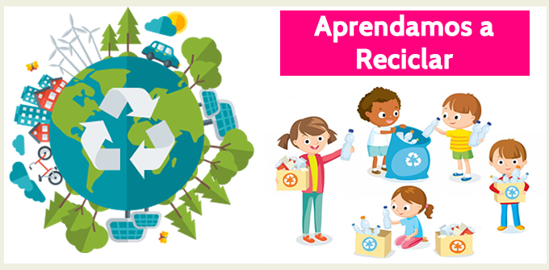
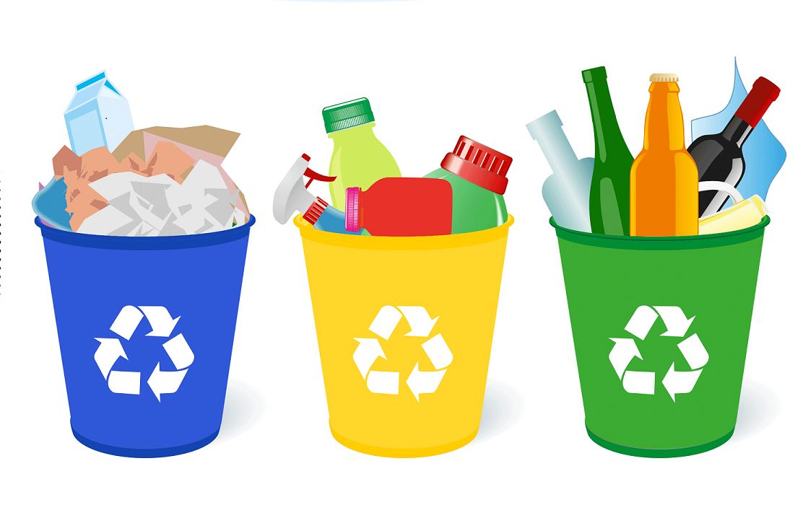
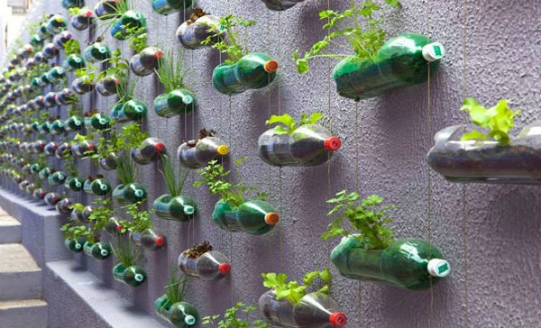
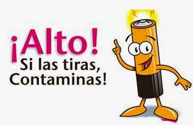
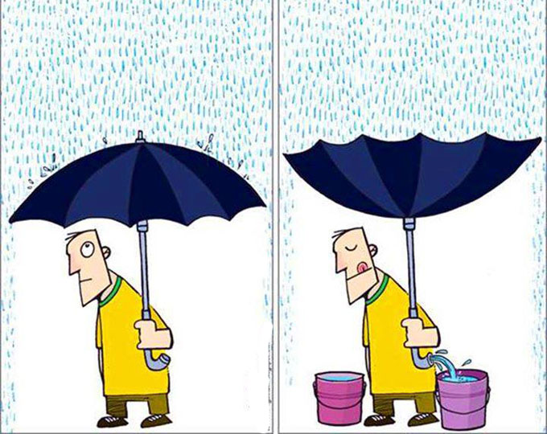

Tips

Clasifica los desechos
Deposita los desechos en su respectivo recipiente según el color

Reutiliza lo que puedas
Puedes convertir una botella de plástico en una maceta para tus plantas,
una caja de cartón en una casa para tu perro y un neumático dañado en un
culumpio.

Cuidado con las pilas usadas
Trata las pilas usadas como un desecho "especial" y apártala de tu basura
y de tu material para reciclar.

Cosecha agua
No toda el agua viene del grifo. Un día lluvioso puede parecer malo, pero no
hay nada más equivocado que eso; puedes almacenar el agua de lluvia en canecas
y usarla para lavar tus platos, limpiar el piso, limpiar el baño, e incluso
puedes beberla.
